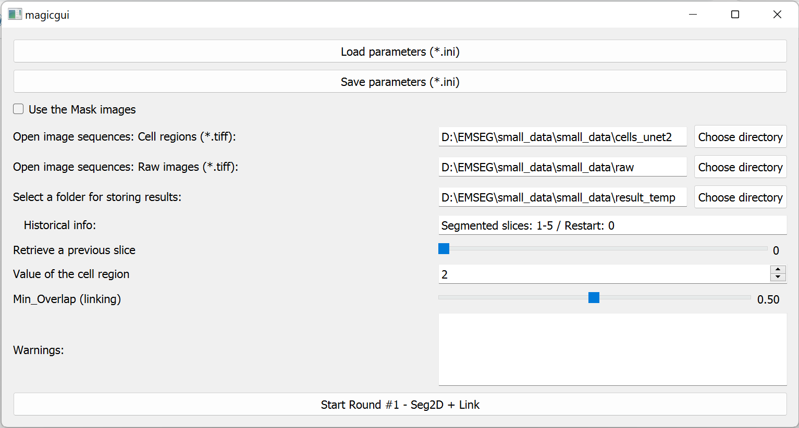
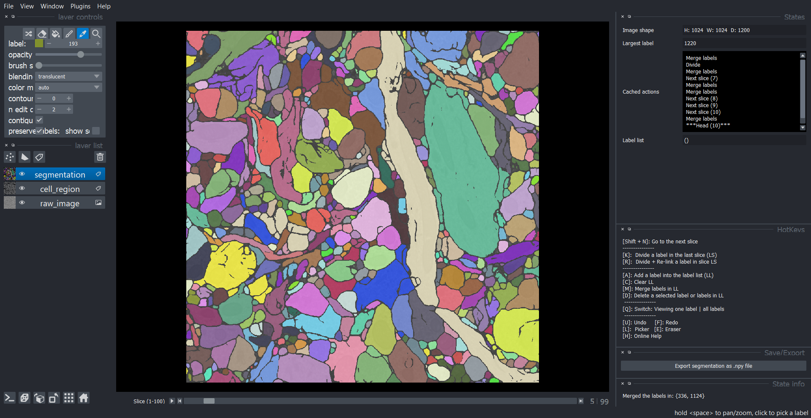

Workflow of round 1
-
Specify the images and the parameters (Detailed instructions)

-
Launch the main window of Seg2D+Link (Panel descriptions)

-
Perform semi-automatic segmentations with following procedures:
- Correct the segmentation in slice i with following operations:
- Merge / Delete / Division / Division-Relink.
-
Generate automatic segmentation in the Next slice i.
Note: The incorrect operations in 1 and 2 can be canceled with undo/redo (Press U or F).
-
Repeat 1 and 2 until all slices are segmented and linked.
- Export the segmentation as a .npy file.
- Correct the segmentation in slice i with following operations: